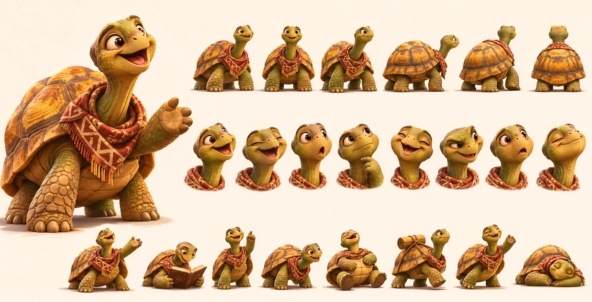
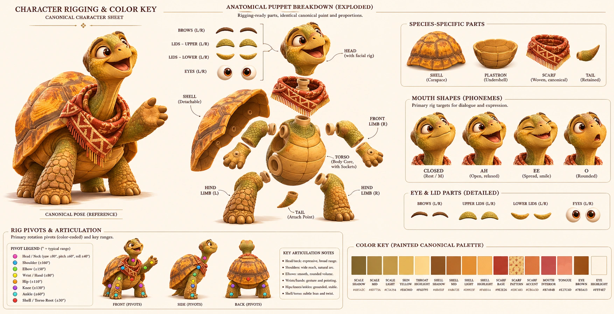
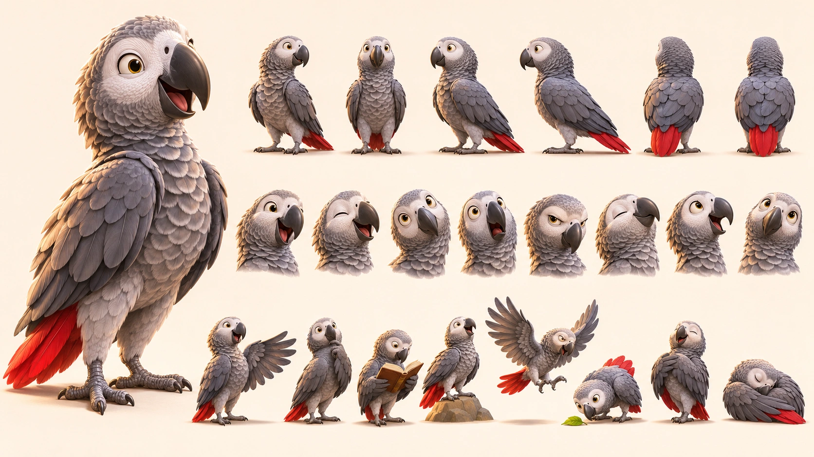
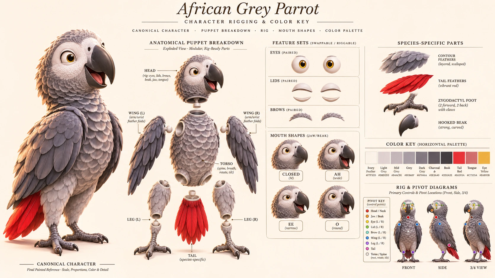
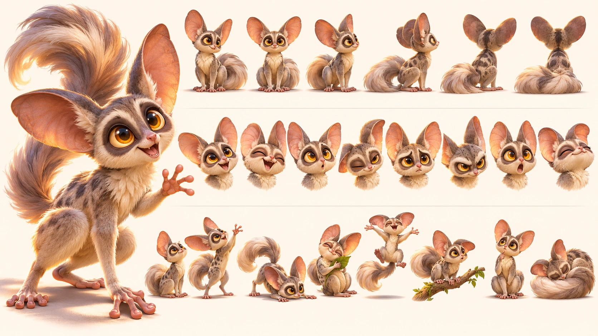
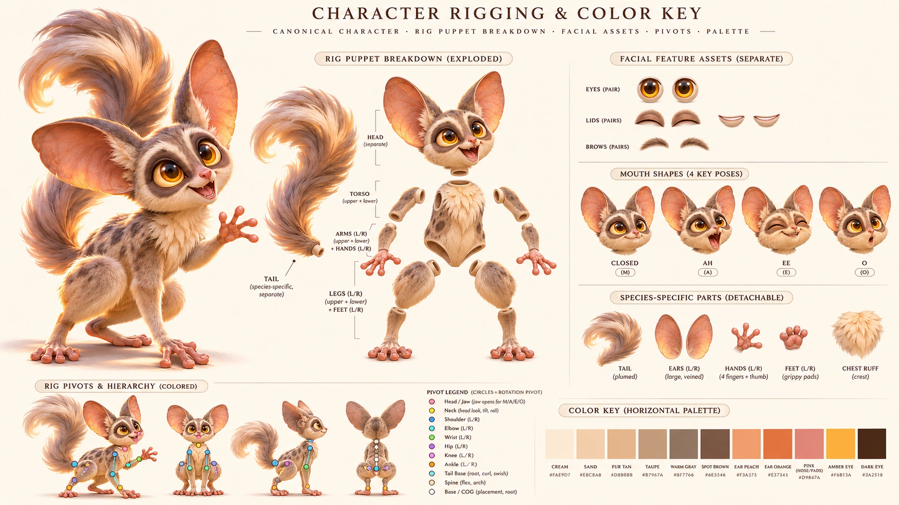
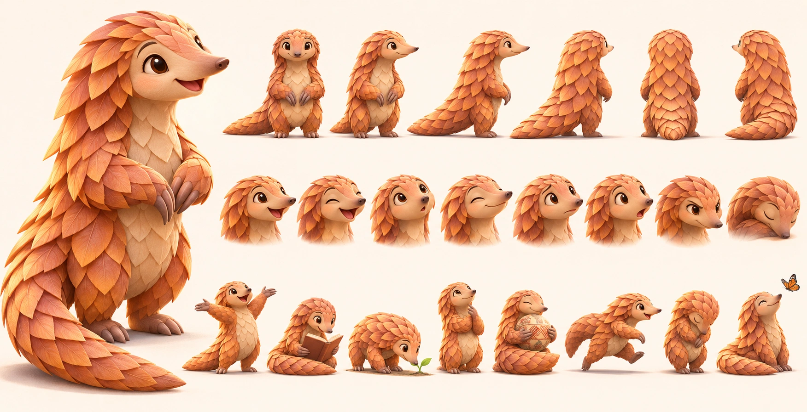
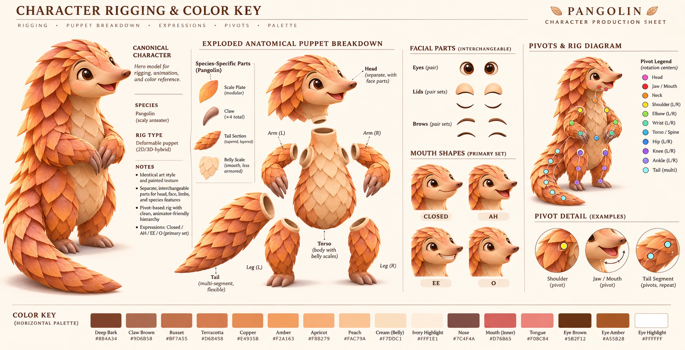
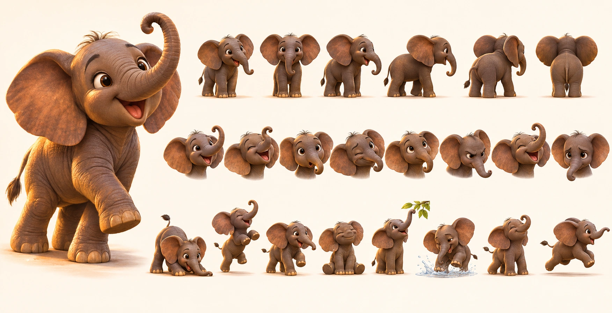
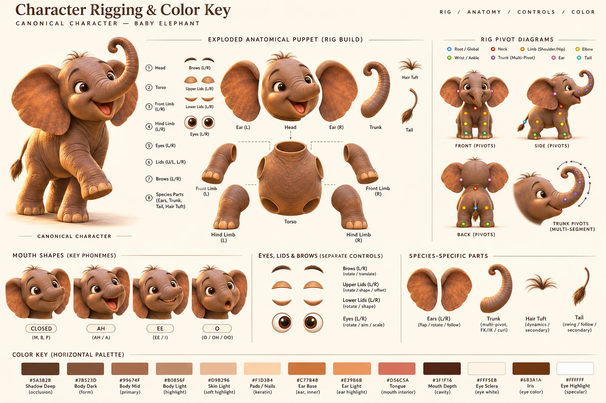

Your turn to speak
Listen to the word for leaf. Then try saying it with Folio.
▶ Hear the word
Hold to speak
Mascot review 02 · Generated artwork
Tortoise · Story guide
Domed ochre shell, long olive neck and an expressive smile. Keep the shell rigid and rotate the head at the neck base. Pin the scarf at the shoulders.

Turnaround, expressions and acting poses. Open the board for full resolution.
Individual transparent hero
Suggested production palette. Preserve the warm edge light and soft contact shadows. At phone size, simplify surface detail and keep the eyes and silhouette clear. Domed ochre shell, long olive neck and an expressive smile. Keep the shell rigid and rotate the head at the neck base. Pin the scarf at the shoulders.
Listen to the word for leaf. Then try saying it with Folio.
▶ Hear the word
Folio found two things on the trail. Choose the leaf.
🪨 Stone
African grey parrot · Speaking partner
Graphite wings and a crimson tail keep Pip recognizable from behind. Pivot the lower beak for vowels and use a separate spread-wing silhouette for flight.

Turnaround, expressions and acting poses. Open the board for full resolution.
Individual transparent hero
Suggested production palette. Preserve the warm edge light and soft contact shadows. At phone size, simplify surface detail and keep the eyes and silhouette clear. Graphite wings and a crimson tail keep Pip recognizable from behind. Pivot the lower beak for vowels and use a separate spread-wing silhouette for flight.
Listen to the word for leaf. Then try saying it with Pip.
▶ Hear the word
Pip found two things on the trail. Choose the leaf.
🪨 Stone
Bushbaby · Exploration guide
Large ears and a plume tail frame the face. Pivot each ear independently. Track gaze toward the next activity before moving the body.

Turnaround, expressions and acting poses. Open the board for full resolution.
Individual transparent hero
Suggested production palette. Preserve the warm edge light and soft contact shadows. At phone size, simplify surface detail and keep the eyes and silhouette clear. Large ears and a plume tail frame the face. Pivot each ear independently. Track gaze toward the next activity before moving the body.
Listen to the word for leaf. Then try saying it with Glimmer.
▶ Hear the word
Glimmer found two things on the trail. Choose the leaf.
🪨 Stone
Pangolin · Hint guide
Overlapping apricot scales flow down the back into the tail. Group them by row. Anchor each row at its front edge and test occlusion during a curl.

Turnaround, expressions and acting poses. Open the board for full resolution.
Individual transparent hero
Suggested production palette. Preserve the warm edge light and soft contact shadows. At phone size, simplify surface detail and keep the eyes and silhouette clear. Overlapping apricot scales flow down the back into the tail. Group them by row. Anchor each row at its front edge and test occlusion during a curl.
Listen to the word for leaf. Then try saying it with Pleat.
▶ Hear the word
Pleat found two things on the trail. Choose the leaf.
🪨 Stone
Forest elephant calf · Celebration guide
The trunk carries the gesture while the ears frame the face. Animate the trunk in three sections. Keep its tip clear of the eyes at lesson scale.

Turnaround, expressions and acting poses. Open the board for full resolution.
Individual transparent hero
Suggested production palette. Preserve the warm edge light and soft contact shadows. At phone size, simplify surface detail and keep the eyes and silhouette clear. The trunk carries the gesture while the ears frame the face. Animate the trunk in three sections. Keep its tip clear of the eyes at lesson scale.
Listen to the word for leaf. Then try saying it with Pebble.
▶ Hear the word
Pebble found two things on the trail. Choose the leaf.
🪨 Stone
Pilot Folio for storytelling, Pip for speaking and Glimmer for exploration. Folio’s open gesture and shell read clearly in the model sheet. Pip’s closing beak makes turn-taking easy to stage. Glimmer can direct attention with ears and gaze before jumping. Pleat has a distinctive silhouette but needs scale-overlap tests. Pebble’s trunk makes celebrations expressive and adds rig complexity.
| Guide | Appeal 20% | Expression 20% | Brand 20% | Rig 15% | Readability 15% | Versatility 10% | /100 |
|---|---|---|---|---|---|---|---|
| Folio | 5 | 5 | 5 | 3 | 5 | 5 | 94 |
| Pip | 4 | 5 | 5 | 4 | 5 | 4 | 91 |
| Glimmer | 5 | 5 | 4 | 3 | 5 | 4 | 88 |
| Pleat | 5 | 4 | 5 | 3 | 4 | 4 | 85 |
| Pebble | 4 | 5 | 4 | 3 | 5 | 5 | 86 |
Design judgments pending child testing. Across languages, keep the lead and switch companions by activity.
Build idle, listening, thinking, speaking, happy, surprised, encouraging, celebrating and moving states. Separate far limbs, tail, body, near limbs, head, face and lids in depth order. Anchor limbs at shoulders and hips. Test closed, open and vowel mouth swaps against lesson audio. The artwork is raster reference. Layer separation, hidden surfaces, mirrored profiles and rig testing still need an illustrator and animator.
Prompt and source record